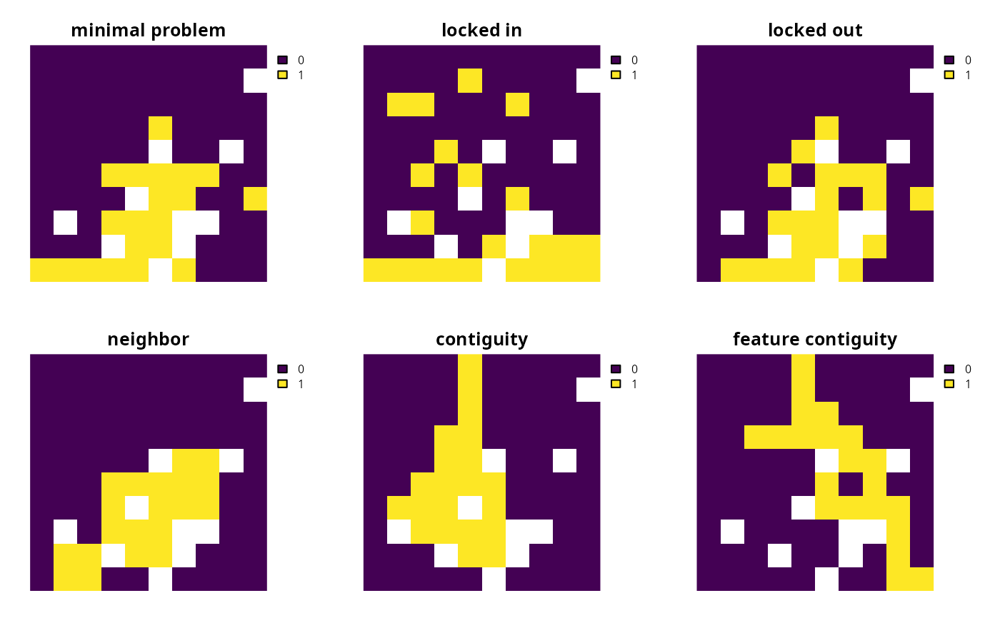

A constraint can be added to a conservation planning problem to ensure that solutions exhibit a specific characteristic.
Details
Constraints can be used to ensure that solutions exhibit a range of different characteristics. For instance, they can be used to lock in or lock out certain planning units from the solution, such as protected areas or degraded land (respectively). Additionally, similar to the penalties functions, some of the constraint functions can be used to increase connectivity in a solution. The key difference between a penalty and a constraint, however, is that constraints work by invalidating solutions that do not exhibit a specific characteristic, whereas penalty functions work by than penalizing solutions which do not meet a specific characteristic. Thus constraints do not affect the objective function. The following constraints are available.
The following constraints can be added to a conservation planning
problem():
add_locked_in_constraints()Add constraints to ensure that certain planning units are selected in the solution.
add_locked_out_constraints()Add constraints to ensure that certain planning units are not selected in the solution.
add_neighbor_constraints()Add constraints to ensure that all selected planning units have at least a certain number of neighbors.
add_contiguity_constraints()Add constraints to a ensure that all selected planning units are spatially connected to each other and form a single contiguous unit.
add_feature_contiguity_constraints()Add constraints to ensure that each feature is represented in a contiguous unit of dispersible habitat. These constraints are a more advanced version of those implemented in the
add_contiguity_constraints()function, because they ensure that each feature is represented in a contiguous unit and not that the entire solution should form a contiguous unit.add_linear_constraints()Add constraints to ensure that all selected planning units meet certain criteria. For example, they can be used to add multiple budgets, or limit the number of planning units selected in different administrative areas within a study region (e.g., different countries).
add_mandatory_allocation_constraints()Add constraints to ensure that every planning unit is allocated to a management zone in the solution. This function can only be used with problems that contain multiple zones.
See also
Other overviews:
decisions,
importance,
objectives,
penalties,
portfolios,
solvers,
summaries,
targets
Examples
# \dontrun{
# load data
sim_pu_raster <- get_sim_pu_raster()
sim_features <- get_sim_features()
sim_locked_in_raster <- get_sim_locked_in_raster()
sim_locked_out_raster <- get_sim_locked_in_raster()
# create minimal problem with only targets and no additional constraints
p1 <-
problem(sim_pu_raster, sim_features) %>%
add_min_set_objective() %>%
add_relative_targets(0.2) %>%
add_binary_decisions() %>%
add_default_solver(verbose = FALSE)
# create problem with locked in constraints
p2 <- p1 %>% add_locked_in_constraints(sim_locked_in_raster)
# create problem with locked in constraints
p3 <- p1 %>% add_locked_out_constraints(sim_locked_out_raster)
# create problem with neighbor constraints
p4 <- p1 %>% add_neighbor_constraints(2)
# create problem with contiguity constraints
p5 <- p1 %>% add_contiguity_constraints()
# create problem with feature contiguity constraints
p6 <- p1 %>% add_feature_contiguity_constraints()
# solve problems
s <- terra::rast(lapply(list(p1, p2, p3, p4, p5, p6), solve))
names(s) <- c(
"minimal problem", "locked in", "locked out",
"neighbor", "contiguity", "feature contiguity"
)
# plot solutions
plot(s, axes = FALSE, nr = 2)

# }